{kind=link}
{kind=link}
{kind=link}
{kind=link}
{kind=link}
{kind=link}
{kind=link}
{kind=link}
A conversa
Você conta sua ideia, a região do corpo e o tamanho que imagina.
Tatuagem autoral / Suminagashi
FLUXO CONTÍNUOFormas livres.
Uma expressão que é sua.
Arraste o dedo.
Deixe a tinta seguir seu gesto.
Trabalhos de Iorrany
Linhas que se espalham, se encontram e acompanham a anatomia.
Arraste para explorar. Toque na imagem para ampliar e conhecer o trabalho.
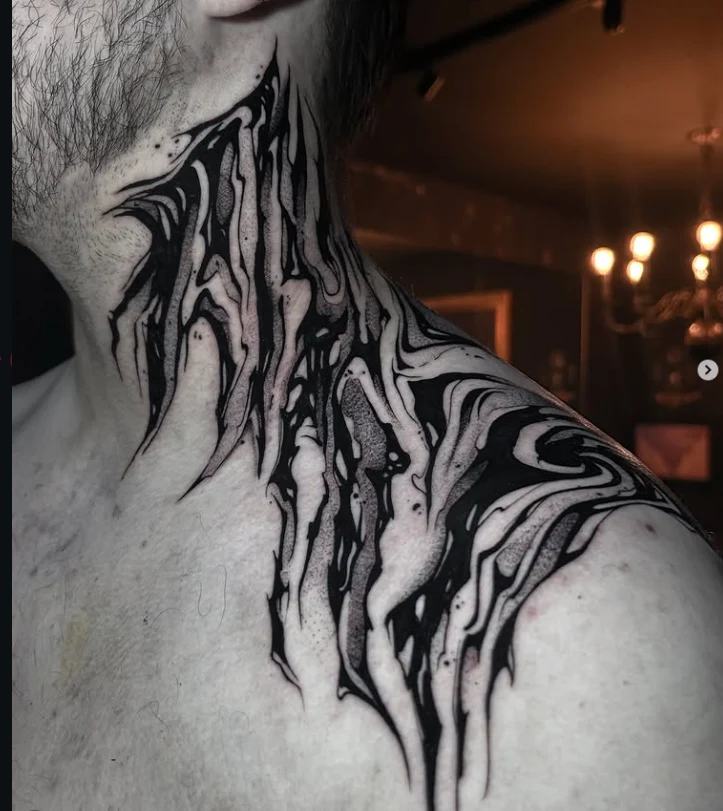
Fluxo no pescoçoPRETO / SUMINAGASHI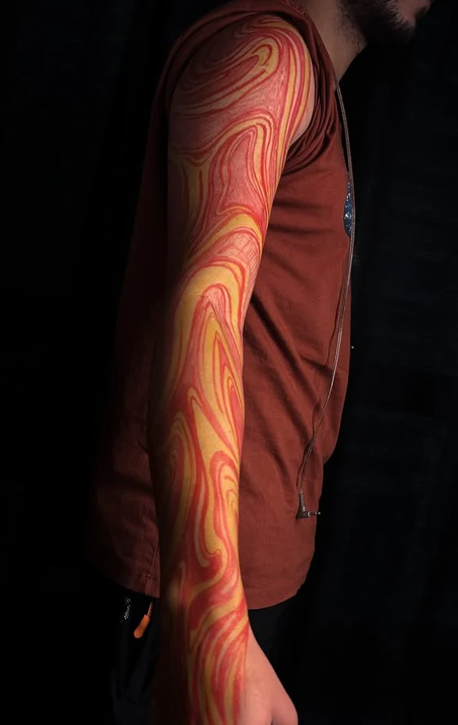
Corrente em corCOR / SUMINAGASHI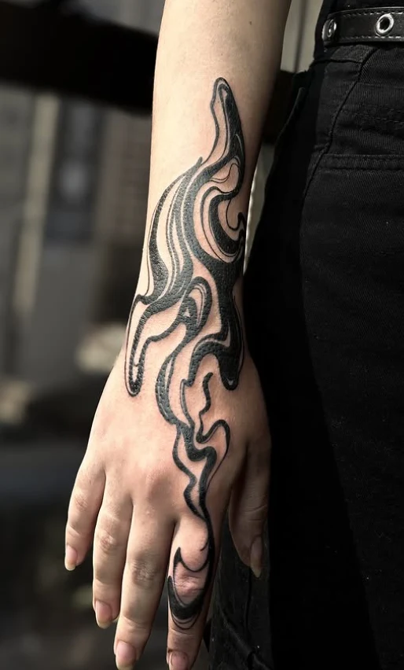
Da mão ao antebraçoPRETO / SUMINAGASHI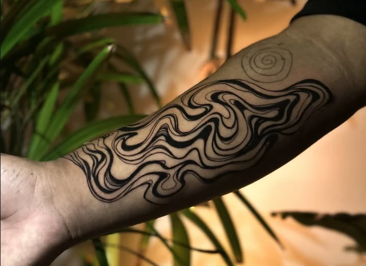
Linhas em expansão2 FOTOGRAFIAS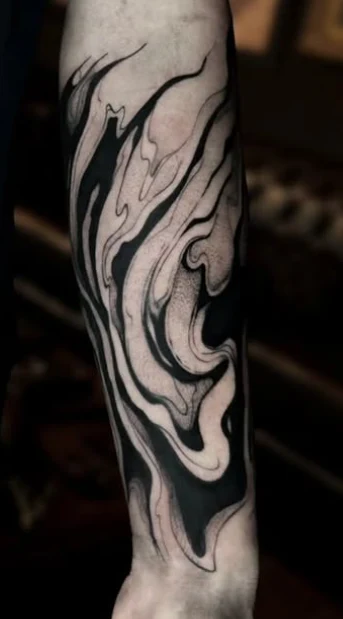
Entre cheios e vaziosPRETO / SUMINAGASHI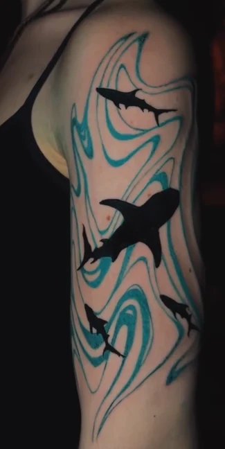
Corrente azulCOR / FIGURATIVO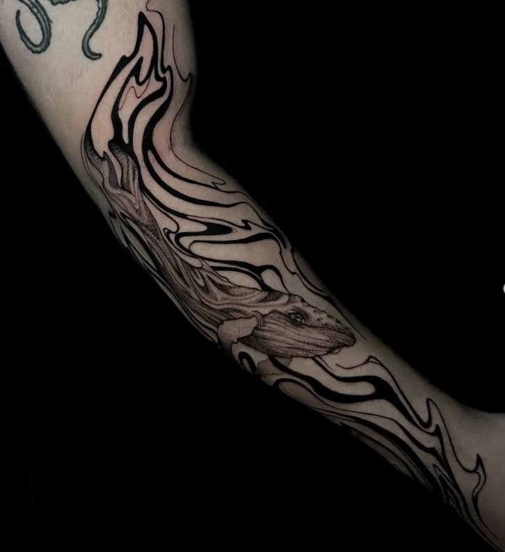
Natureza em fluxoPRETO / FIGURATIVO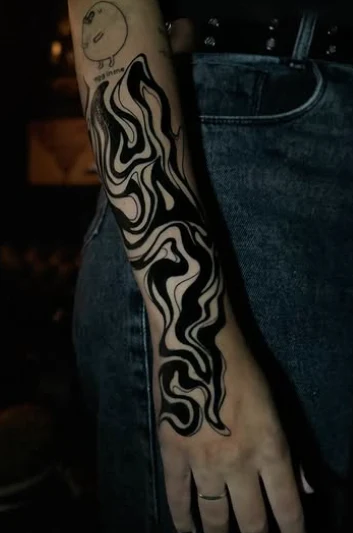
Forma livrePRETO / SUMINAGASHIMais que um desenho
A TATUAGEM VIRA
PARTE DE QUEM
VOCÊ É.
Uma forma de expressão que acompanha sua história.
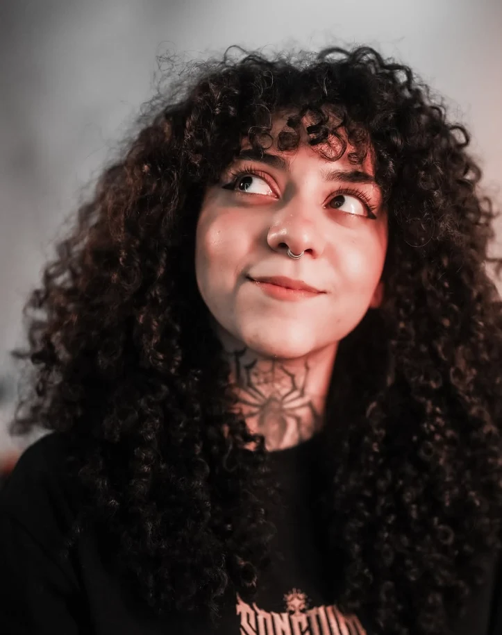
A artista
Encontrei na tatuagem um jeito de transformar desenho em expressão.
Meu caminho começou entre desenhos de plantas e animais, depois de uma passagem pela Biologia. Pensei em seguir a fotografia, até que um amigo tatuador viu meus desenhos e se ofereceu para me ensinar.
Vieram os dias no estúdio, os primeiros treinos e a certeza de que era isso que eu queria fazer. Aos poucos, encontrei minha própria linguagem.
Hoje, o fluxo do suminagashi guia meu trabalho. Quero criar para quem vê a tatuagem como identidade e como uma maneira de se reconhecer no próprio corpo.
Vamos pensar no seu projetoDo papel ao corpo
O desenho considera a região, as curvas e o espaço que vai ocupar.
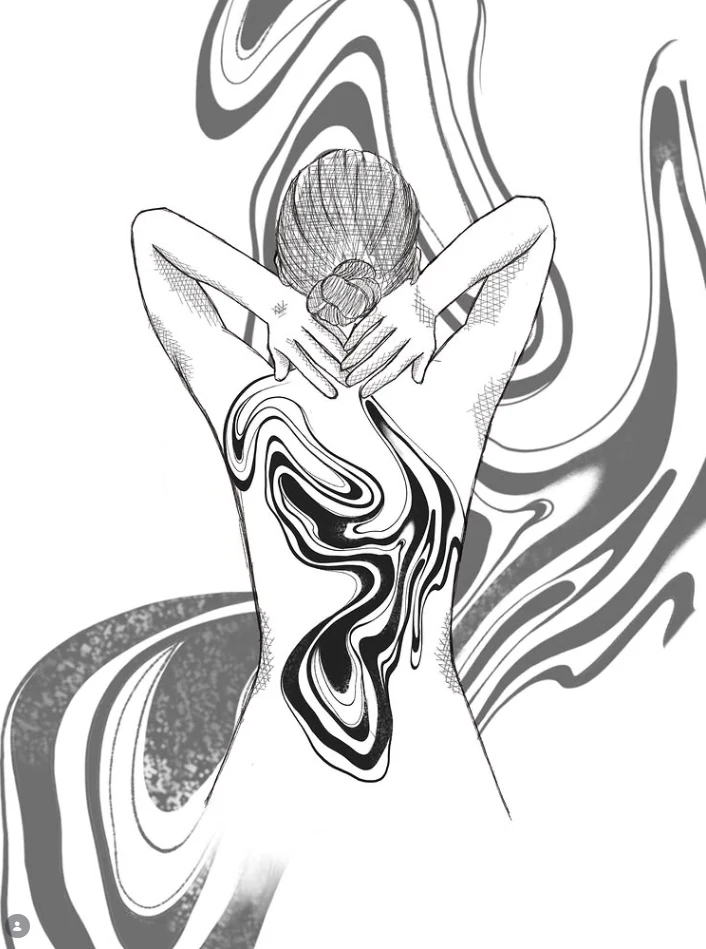
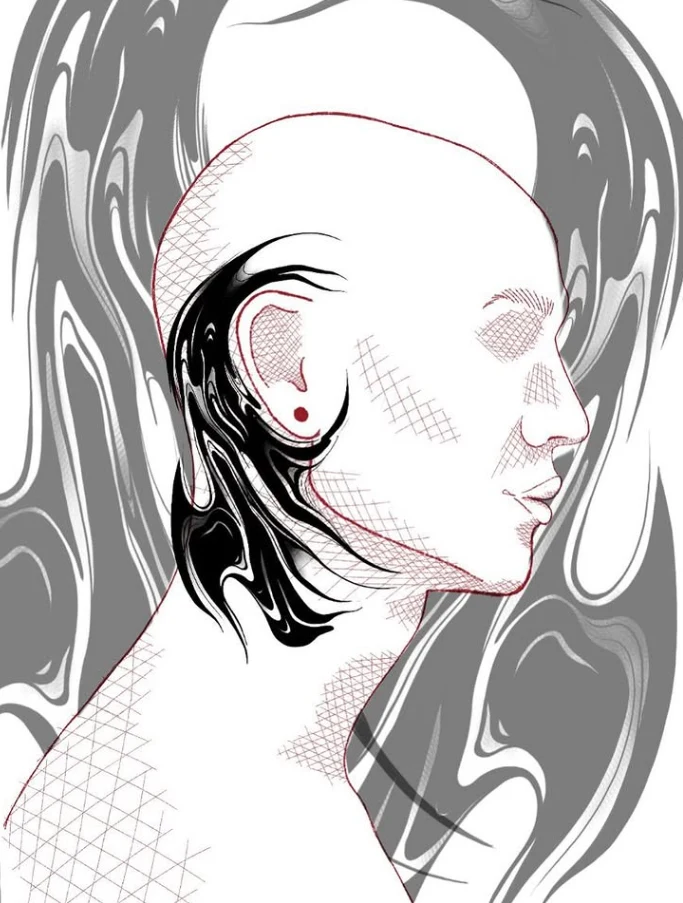
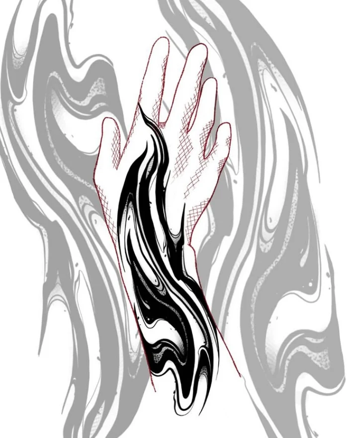
Você conta sua ideia, a região do corpo e o tamanho que imagina.
Referências e anatomia ajudam a encontrar o caminho do desenho.
Etapas, disponibilidade e cuidados são combinados diretamente comigo.
Play na tattoo
A playlist da Ioiô para entrar no clima.
Vamos criar?
Uma ideia, uma referência ou só a vontade de começar. Me conta.
Conversar direto no WhatsApp